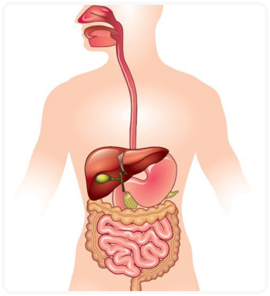

DIGESTÓRIO
O Sistema Digestório é formado por um conjunto de órgãos que atuam no corpo humano. A ação desses órgãos está relacionada ao processo de transformação do alimento, que tem o objetivo de ajudar na absorção dos nutrientes.
